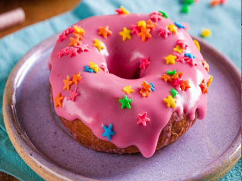

Donuts
Ingredientes
Modo de Preparo
Obs: O óleo deve estar no máximo a 180°, para que não encharque as rosquinhas. A panela deve ter bastante óleo.
Rende aproximadamente 12 rosquinhas
Obs: O óleo deve estar no máximo a 180°, para que não encharque as rosquinhas. A panela deve ter bastante óleo.
Rende aproximadamente 12 rosquinhas